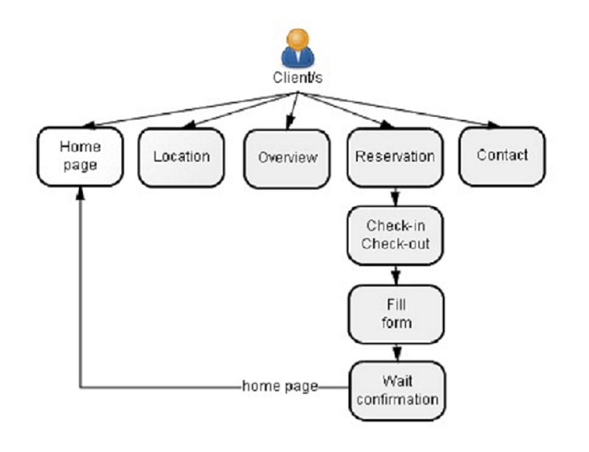
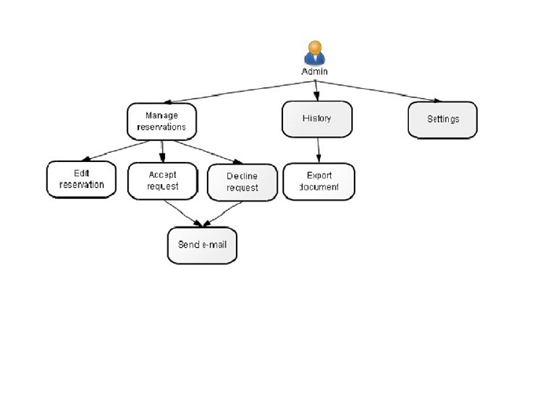

Why neLo (Online Lodging) application?
First of all the team is composed from: Pisarciuc Ionut-Daniel and Canila Ovidiu-Daniel, students at Faculty of Computer Science Iasi.
We chose this class S project because we have the possibility to learn loots of thinks, using PHP, JavaScript,JQuery, HTML5/CSS, MySQL. This application will help us to improve our skills for web programming.
Intro
Online Lodging is a Web application wich informs/helps the customers to make reservations to a hotel, Pensiunea Oltea in our case. Each client can see in real time the structure of the hotel and how many rooms are free. After the client decide how loong will stay he can perform a reservation.
The front-end is build with HTML5/CSS,JavaScript,JQuery and for the back-end we use PHP, more information about the tehnologies used in this aplication will be discussed in: "Tehnologies" and "Implementation", the sections below.
UML State Diagrame
 {kind=link}
{kind=link}
Screenshots and details about the code used in this application
Conclusions
In conclusion this web application will help the clients to make a fast reservation to our hotel and for the admin/s it will be very easy to see in real time the clients requests.
This web project helped us to learn a loot of new thinks about web programming and to improve our team-work.
Bibliography
- http://www.sublimetext.com ->[Sublime Text 2]
- https://github.com ->[GitHub]
- http://en.wikipedia.org/ ->[HTML]||[CSS]||[JavaScript]||[JQuery]
- https://phpacademy.org/ ->[PHP]||[MySQL]
- http://diagramo.com/ ->[UML diagrame]
- http://profs.info.uaic.ro/~busaco/teach/courses/web/ ->[Web courses]
- http://validator.w3.org/ ->[Markup Validation]
- http://jigsaw.w3.org/css-validator/ ->[CSS Validation]
- http://www.w3schools.com/ ->[W3schools]